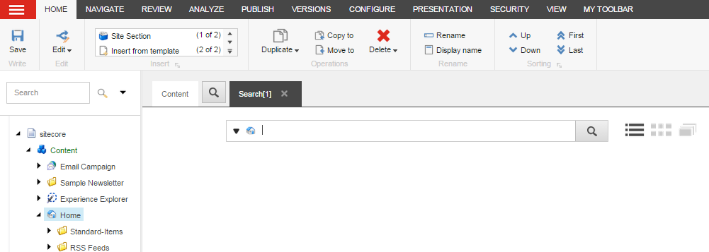
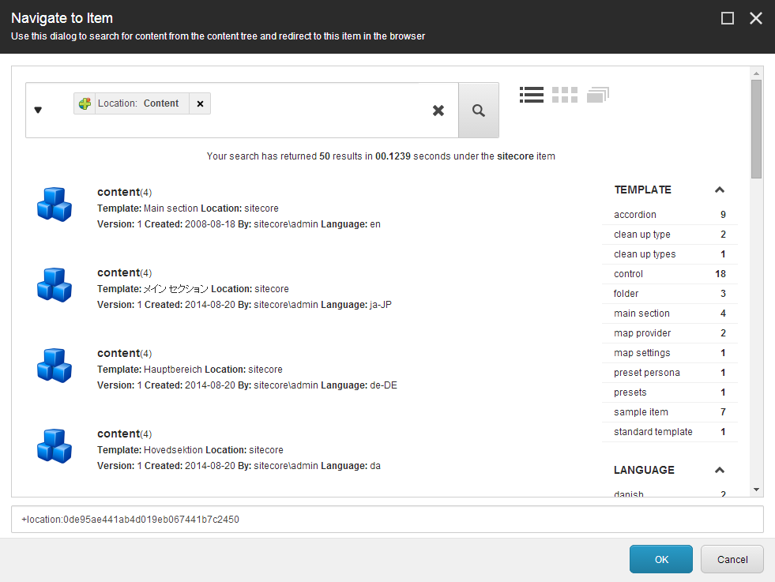
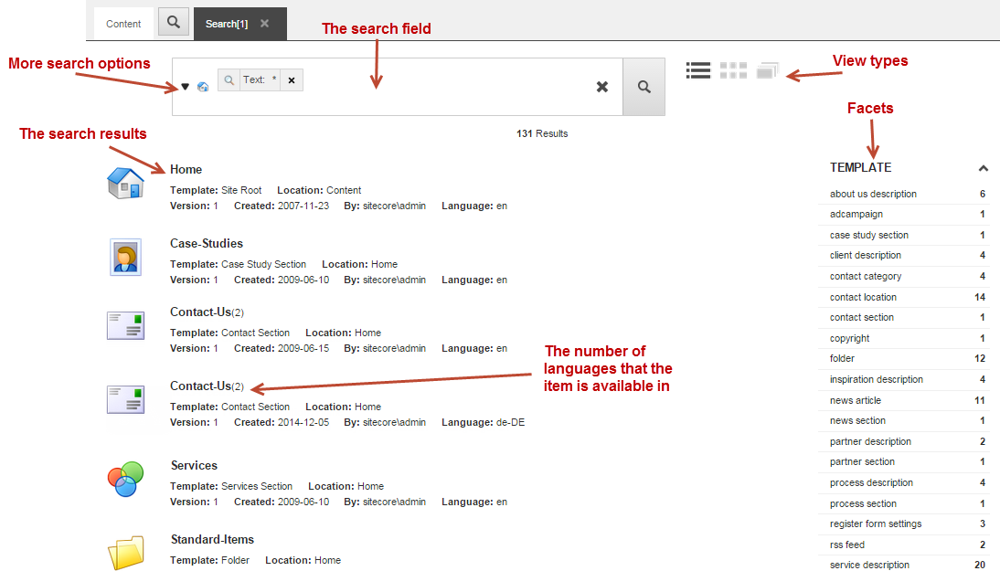

検索¶
Sitecoreの検索エンジンを使えば、コンテンツツリー内のすべてのアイテムを素早く検索することができます。探しているアイテムを正確に見つけるために、検索フィルターやファセットなどの高度な検索機能を使用することができます。
注釈
検索には アーカイブ されているものは含まれていません。
Sitecoreの検索エンジンには、コンテンツエディタのコンテンツツリーの各項目、またはエクスペリエンスエディタのリボンからアクセスすることができます。
コンテンツ エディター¶
コンテンツ エディターでは、各アイテムのコンテンツタブの横に検索タブがあります。アイテム バケットに隠されたアイテムを検索して開くには、検索機能が必要なため、アイテム バケットは [検索] タブで直接開きます。
コンテンツ ツリーのアイテムで検索を実行するには、コンテンツ領域で [検索 ] をクリックし、新しい検索タブで検索条件を入力します。検索は、選択したアイテムのみを対象に実行されます。
{kind=link}
同じアイテムから複数の検索を実行したい場合は、新しい検索タブを開きます。必要な数だけ検索タブを開くことができます。各検索タブにはタイムスタンプがあり、検索を保存したい場合など、特定の検索を参照することができます。
エクスペリエンス エディター¶
Experience Editorで検索を開くには、リボンで、Search クリックします。Navigate to Item ダイアログボックスが開き、デフォルトで Sitecore 内のすべてのアイテムの検索が実行されます。
{kind=link}
検索インターフェイス¶
コンテンツ エディターから検索にアクセスしても、エクスペリエンス エディターから検索にアクセスしても、クエリを作成したり、検索結果を表示したり、検索結果をフィルタリングしたりするオプションは同じです。
{kind=link}
検索フィールド
[検索] フィールドに、検索の検索クエリを入力します。フリーテキストを入力するか、定義済みの検索フィルタを使用するか、または両方を組み合わせて入力できます。ドロップダウンメニューから検索オプションにアクセスできます。
その他の検索オプション
検索フィールドの左にあるドロップダウン矢印をクリックすると、検索を最適化して高速化するために使用できる、事前に定義された検索オプションのリストが開きます。たとえば、最近変更または開いたアイテムのリストからアイテムを開いたり、事前に定義された検索フィルタのいずれかを選択したり、検索によって返されたすべてのアイテムに検索操作のいずれかを適用したりすることができます。
注釈
管理者は検索エンジンを設定し、例えば、どの検索ビューやファセットを利用できるか、検索結果にメディアアイテムを表示できるかどうかなどを決定します。
ビューの種類
検索結果のさまざまなビューは、検索フィールドの右側にあります。デフォルトのビューは、リストビュー、グリッドビュー、およびイメージビュー7C0BB95C21184A869B3BCA9AB6263F3E.pngです。必要に応じて、管理者はタグビューやテーブルビューなどの他のビューを有効にすることができます。
注釈
ビューを変更すると、検索フィールドのキーワードとフィルタのみに基づいて検索が再び開始されます。
ファセット
ファセットとは、検索によって返されたアイテムを分類する方法である。例えば、著者、言語、作成時期などで分類することができます。検索結果のリストができたら、ファセットを使ってさらに絞り込みを行うことができます。
検索結果
検索を実行すると、検索フィールドの下に結果が表示されます。検索結果には、タイトル、テンプレート、バージョンなど、返されたアイテムに関する基本的な情報が含まれており、簡単に概要を知ることができます。検索結果のリストから、アイテムをクリックしてコンテンツ エディタで開いたり、エクスペリエンス エディタで該当するページに移動することができます。